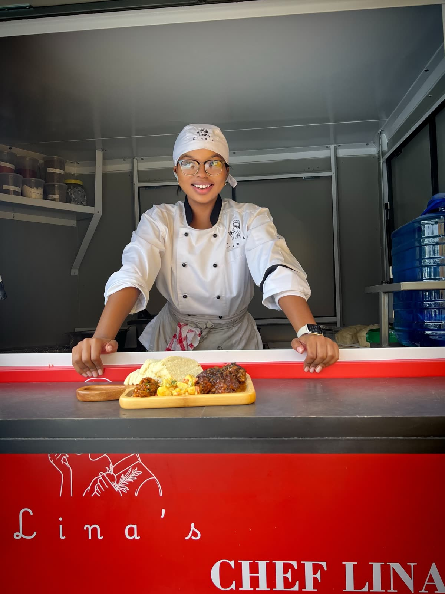
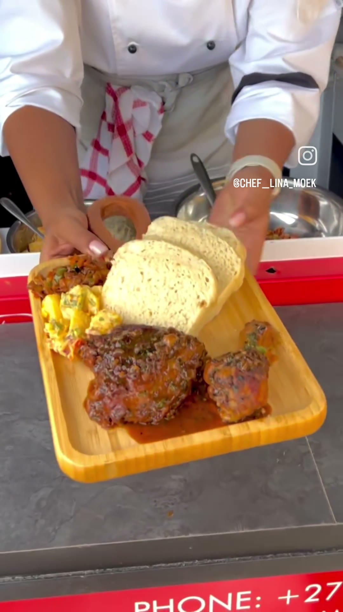
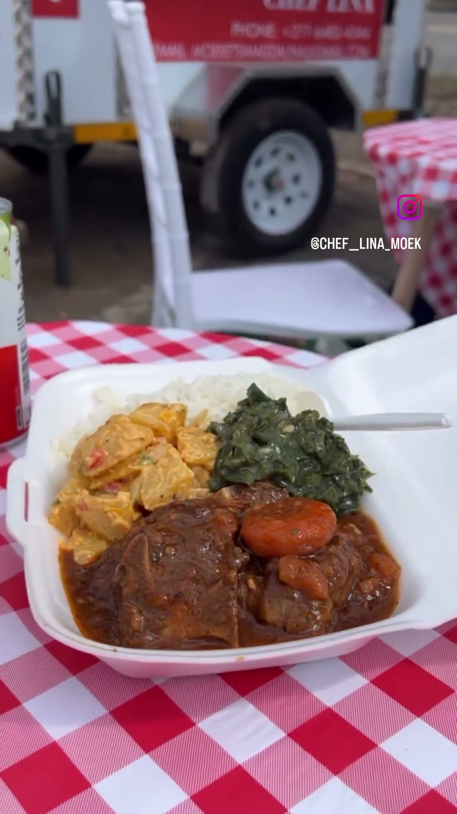

Chef Lina · Mobile kitchen & private catering
Cooked by hand.
Served from the trailer.
A real chef, a real trailer, and a menu you can see before you order — for a quick plate or a fully catered event.
Chef Lina, confirmed genuine footage/photo — verification note
One chef, one trailer, two ways to work with her: order a plate today, or book her for your next event.
Placeholder positioning line — final wording pending Tebogo's approval. Not published copy.
Mobile-kitchen orders
Kota, chips, plates and drinks — order straight from today's menu, collect or arrange delivery, confirmed over WhatsApp.
Browse the menu →Private catering
Weddings, funerals, corporate functions and family events. Tell us the occasion and Lina will follow up with a quote.
Start an enquiry →Occasions Lina's caters
- Weddings
Presentation-led plates and packages for the big day.
- Funerals
Reliable, respectful catering at scale.
- Corporate events
Order-ready catering for teams and functions.
- Private functions
Family gatherings, birthdays and get-togethers.

Meet Chef Lina
Lina cooks every plate herself, from the trailer counter to your hands — chicken, chakalaka, potato salad and fresh bread, made to order.
Placeholder biography — real background/story pending Tebogo (Client Inputs Register I-005). No claims beyond what's confirmed are made here.

The trailer
The same trailer that serves quick plates also travels to weddings, funerals, corporate functions and private events — one kitchen, wherever the occasion needs it.
Exact trailer specification and service-area radius pending Tebogo (Client Inputs Register I-008).
From the trailer
What's verified here
No reviews, ratings or client names are shown because none have been supplied yet. This section only states what has actually been confirmed.
- ✓ Every photo and video credited to Lina on this page carries her own
@chef_lina_moekwatermark, confirming it's genuinely hers. - ✓ The menu, item names and prices are transcribed directly from Lina's own menu document — nothing added or invented.
- ✓ The trailer shown is Lina's actual mobile kitchen, photographed at a real private catering event.
- — Testimonials, ratings, business registration details and precise contact information are not yet supplied and are intentionally left out rather than fabricated (see Client Inputs Register).
Order from the menu
Quick orders are confirmed over WhatsApp — no account needed.
Prototype only — see the WhatsApp note below for the current verification status of this action.
Catering quotation
Ready when you are.
Browse today's menu, or tell us about your event — Lina follows up personally.